Zajęcia: BODYART +
To unikalne połączenie technik jogi, tai chi, qigong, ćwiczeń rehabilitacyjnych oraz wzmacniających.
+ bo łączymy tu wiele styli zajęć BODYART.

KONIEC Z BÓLEM PLECÓW

RELAKS I REDUKCJA STRESU

SWOBODA RUCHÓW I SPRAWNOŚĆ
WIĘCEJ ENERGII DO DZIAŁANIA
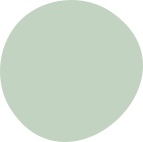
SIŁA I WYTRZYMAŁOŚĆ
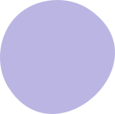
RÓWNOWAGA EMOCJONALNA
Dlaczego warto skorzystać z BODYART?
Yin Yang dla ciała
W trakcie całego treningu naprzemiennie wzmacniamy i rozciągamy powięziowo ciało tak, aby zapanowała w nim równowaga, a napięcia się rozluźniły.
Relaks dla głowy
Oddech, który jest kluczowym elementem BODYART, pozwala twojej głowie się zrelaksować i wyciszyć. W trakcie treningu jest czas pomyśleć, jak się czujemy i czego potrzebujemy i to zrealizować.
Idea
Jest to najzdrowszy trening, jaki został stworzony. Idzie za nim idea 5 żywiołów, które są różne, lecz wzajemnie się uzupełniają i na siebie oddziałują. Tak więc jest czas na pracę i odpoczynek. Równowaga na macie jak i w życiu.
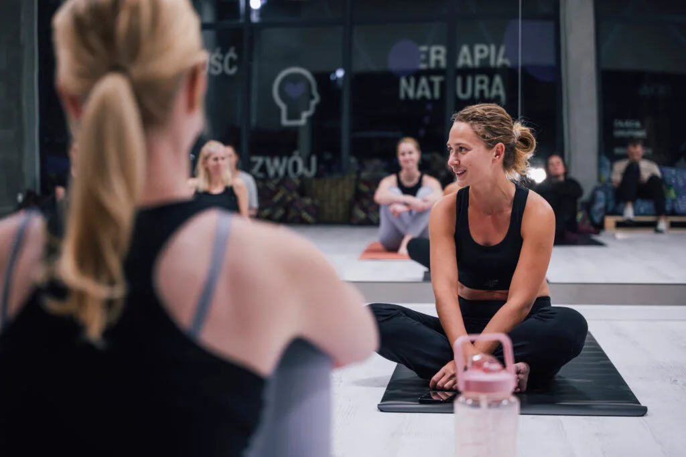
Czy BODYART jest dla mnie?
Masz ograniczone zakresy ruchu i chcesz zwiększyć swoją mobilność?
Boli Cię kręgosłup i czujesz, że potrzebujesz, by się wzmocnił?
Chcesz wzmocnić swoje mięśnie głębokie brzucha?
Pragniesz znaleźć równowagę między pracą a odpoczynkiem?
Chcesz mieć więcej siły w codziennym życiu?
Szukasz treningu, który sprawi, że poczujesz się lepiej i bóle w ciele znikną?
Odczuwasz brak energii i siły do wprowadzenia zmian w swoim życiu?
Co zyskasz ćwicząc regularnie?
- Zrozumienie swojego ciała i jego potrzeb
Nauczysz się lepiej słuchać swojego ciała, co pomoże uniknąć przeciążeń i szybciej reagować na sygnały zmęczenia czy napięcia. - Zdrowy kręgosłup i otwarta klatka piersiowa
Poprawisz postawę, zmniejszysz napięcia w plecach oraz ułatwisz swobodne oddychanie, co wpłynie na lepsze samopoczucie i więcej energii. - Silne mięśnie brzucha i CORE
Wzmocnisz centrum swojego ciała, co poprawi stabilność, zmniejszy ryzyko urazów i ułatwi wykonywanie codziennych aktywności. - Mobilne biodra i sprawne ciało
Zyskasz większą swobodę ruchów i pewność podczas chodzenia, wstawania czy ćwiczeń, co sprawi, że będziesz się czuć lżej i bardziej energicznie. - Relaks dla głowy
Zredukujesz napięcia i stres, co pomoże Ci się wyciszyć, lepiej spać i zachować spokój nawet w trudnych sytuacjach. - Silne i zrelaksowane ciało
Nauczysz się łączyć siłę z rozluźnieniem, co poprawia komfort ruchu i pozwala unikać przewlekłego napięcia mięśniowego. - Więcej energii do działania
Dzięki lepszemu dotlenieniu i harmonijnemu ruchowi poczujesz przypływ energii, który pozwoli Ci być bardziej aktywnym i zmotywowanym. - Utrata tkanki tłuszczowej
Regularne ćwiczenia pomogą spalić nadmiar tłuszczu, poprawiając sylwetkę i wspierając zdrowie metaboliczne. - Lepsze dotlenienie organizmu
Poprawisz swoją wydolność oddechową, co zwiększy odporność organizmu i ogólne samopoczucie. - Większe i swobodne zakresy ruchów
Zyskasz elastyczność i pełniejszą ruchomość stawów, co ułatwi wykonywanie codziennych czynności i zapobiegnie kontuzjom.

DARIA GRONALEWSKA
Nauczycielka
Pełna pasji od 9 lat pracuję z ciałem człowieka. Doświadczenie zawodowe w fitnessie oraz pęd w życiu zaprowadziły mnie w kierunku treningu BODYART, który, jak się okazało, był brakującym elementem całości.
Pierwsze moje spotkanie z BODYARTEM nie było łatwe. Jako osoba, która czuła się jak ryba w wodzie w fitnessie, nagle nie daje rady podczas „spokojnych” ćwiczeń. Jest siła, ale nie ma mocy, by w niej wytrwać, jest spięte ciało, które drży, gdy wprowadzam do niego oddech, bo nie potrafi odpuścić. To doświadczenie otworzyło mi drogę do poszukiwania jakości w ruchu.
Dostrzegłam, jak ważna jest równowaga w ciele, umyśle i duszy. BODYART uczy cierpliwości, uczy oddechu, uczy spokoju, uczy wytrwać i uczy odpuszczać. Rozpuszcza emocje, które gromadziły się w ciele, dając tym samym poczucie lekkości. W swojej pracy łączę doświadczenia tak, by trening był narzędziem, które daje zdrowie.
Sądzę, że BODYART był mi pisany. Zaczęłam od tańca i fitnessu, a intuicja, która była moją przewodniczką, prowadziła w kierunku holistycznego życia. Odzyskałam BALANS i przekazuję to dalej. Zapraszam na lekcję!
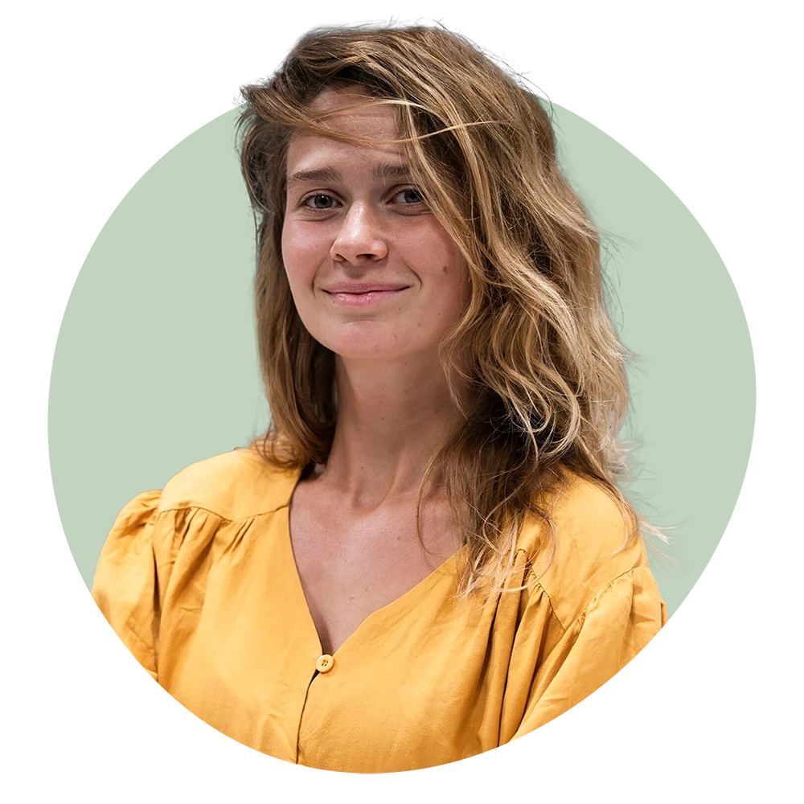
Dołącz do zajęć!
Kup karnet bądź skorzystaj z pierwszego wejścia do klubu w PROMOCYJNEJ CENIE i poczuj korzyści płynące z ruchu.
Dowiedz się więcej o treningu BODYART:
FILOZOFIA I ZAŁOŻENIA
Filozofia i założenia BODYARTU opierają się na traktowaniu człowieka jako funkcjonalnej, zintegrowanej całości — ciała i umysłu. Trening nie koncentruje się na izolowanym wzmacnianiu pojedynczych mięśni, lecz angażuje wszystkie partie mięśniowe jednocześnie, poprawiając siłę, elastyczność, koordynację i wytrzymałość. Ruchy wykonywane są płynnie, tworząc dynamiczne, taneczne układy, które harmonizują ciało z oddechem i umysłem. Dzięki temu BODYART sprzyja redukcji stresu, poprawie koncentracji oraz osiąganiu wewnętrznej równowagi.
Trening BODYART wykorzystuje własną masę ciała, nie wymaga sprzętu, a jego ćwiczenia są dostosowane do osób w różnym wieku i na różnym poziomie zaawansowania. Metoda integruje techniki z jogi, tai chi, qigong, tańca, fizjoterapii oraz japońskiej metody DO IN, co pozwala na kompleksowe wzmocnienie i rozciągnięcie mięśni, poprawę postawy oraz eliminację nieprawidłowych nawyków ruchowych.
JAK FILOZOFIA HOLISTYCZNEGO PODEJŚCIA WPŁYWA NA CODZIENNĄ RÓWNOWAGĘ?
Filozofia holistycznego podejścia BODYART wpływa na codzienną równowagę poprzez integrację ciała, umysłu i ducha w jednym treningu. Ćwiczenia BODYART łączą techniki oddechowe z płynnymi, funkcjonalnymi ruchami inspirowanymi jogą, pilatesem i filozofią chińską, w tym zasadą Yin i Yang, co nadaje treningowi charakterystyczny rytm i harmonię. Dzięki temu praktyka nie tylko wzmacnia siłę, gibkość i koordynację, ale również pomaga osiągnąć wewnętrzny spokój oraz lepsze zrozumienie własnego ciała.
Codzienna praktyka BODYART pozwala skupić się na chwili obecnej, redukując stres i poprawiając koncentrację, co przekłada się na większą równowagę emocjonalną i psychiczną. Połączenie spokojnych, relaksujących ćwiczeń z dynamicznymi i rytmicznymi elementami daje energię do działania, a jednocześnie umożliwia regenerację i odprężenie. Holistyczne podejście tej metody sprzyja harmonii między aktywnością fizyczną a regeneracją, co jest kluczowe dla utrzymania zdrowia i dobrego samopoczucia na co dzień.
W praktyce BODYART wpływa więc kompleksowo na codzienną równowagę, wspierając zarówno sprawność fizyczną, jak i stabilność emocjonalną oraz mentalną, co jest fundamentem zdrowego, zrównoważonego stylu życia.
TEORIA PIĘCIU PRZEMIAN W BODYARCIE
Teoria pięciu przemian (wu xing) z Tradycyjnej Medycyny Chińskiej stanowi kluczowy fundament filozoficzny i praktyczny treningu BODYART stworzonego przez Roberta Steinbachera. Pięć przemian — drewno, ogień, ziemia, metal i woda — to dynamiczne, wzajemnie powiązane żywioły, które symbolizują różne funkcje organizmu, emocje, narządy oraz naturalne cykle zachodzące w przyrodzie i człowieku.
W BODYART teoria ta została zaadaptowana jako sposób na harmonijne komponowanie sekwencji ruchowych, które odzwierciedlają naturalne procesy tworzenia i kontroli między żywiołami. Każdy element odpowiada innym aspektom ciała i umysłu:
DRZEWO – symbolizuje wzrost, elastyczność i kreatywność; wiąże się z wątrobą i emocją gniewu.
OGIEŃ – oznacza energię, ekspresję i radość; powiązany jest z sercem i pobudzeniem.
ZIEMIA – odpowiada za stabilność, ugruntowanie i równowagę; związana ze śledzioną i obsesją.
METAL – kojarzy się z precyzją, oczyszczeniem i porządkiem; dotyczy płuc i smutku.
WODA – symbolizuje płynność, regenerację i spokój; związana z nerkami i strachem.
BODYART wykorzystuje cykle przemian, czyli cykl tworzenia (np. woda odżywia drzewo, drzewo pali ogień) oraz cykl kontrolny (np. metal kontroluje drzewo, ziemia kontroluje wodę), aby ruchy i oddech wzajemnie się uzupełniały i harmonizowały. Sekwencje ćwiczeń są tak układane, by równoważyć napięcie i rozluźnienie, siłę i elastyczność, co sprzyja przepływowi energii Qi i utrzymaniu zdrowia na poziomie fizycznym, emocjonalnym i energetycznym.
W praktyce podczas zajęć BODYART uczestnicy uczą się świadomego ruchu i oddechu, które są dostosowane do rytmów pięciu przemian. To pozwala lepiej zrozumieć własne ciało, emocje oraz ich zmienność, a także odzyskać wewnętrzną równowagę i spokój. Dzięki temu trening BODYART nie jest tylko aktywnością fizyczną, lecz kompleksową praktyką wspierającą zdrowie holistyczne i harmonię życia codziennego.
HISTORIA POWSTANIA BODYARTU
Początki koncepcji BODYART sięgają 1993 roku, kiedy Robert Steinbacher pracował z dziećmi ze specjalnymi potrzebami w centrum edukacji leczniczej (HPZ) w pobliżu Salzburga. Jego głównym zadaniem było pomaganie dzieciom w poprawie funkcji motorycznych ciała. To doświadczenie, połączone z jego pasją do tańca i rozwijającą się karierą prezentera, stało się fundamentem dla BODYART.
Steinbacher, czerpiąc z różnorodnych źródeł, stworzył system treningowy, który stanowi odpowiedź na potrzeby współczesnego, zabieganego człowieka, poszukującego ciszy i koncentracji w codziennym życiu. Zauważył, że wiele dotychczasowych form aktywności fizycznej skupia się na izolowanych mięśniach, podczas gdy on dążył do holistycznego podejścia, traktując ludzkie ciało jako funkcjonalną całość.
Kluczowe inspiracje dla BODYART pochodziły z:
- Jogi
Fizjoterapii
Tańca
Klasycznych technik oddechowych
Medycyny chińskiej, w tym teorii Yin i Yang oraz idei pięciu żywiołów
Robert Steinbacher czerpał z medycyny chińskiej przede wszystkim inspiracje związane z filozofią Yin i Yang oraz teorią pięciu żywiołów, które stały się fundamentem koncepcji BODYART. Te zasady pomagają w tworzeniu harmonii i równowagi między przeciwstawnymi, lecz uzupełniającymi się energiami — napięciem i rozluźnieniem, wdechem i wydechem, aktywnością i regeneracją.
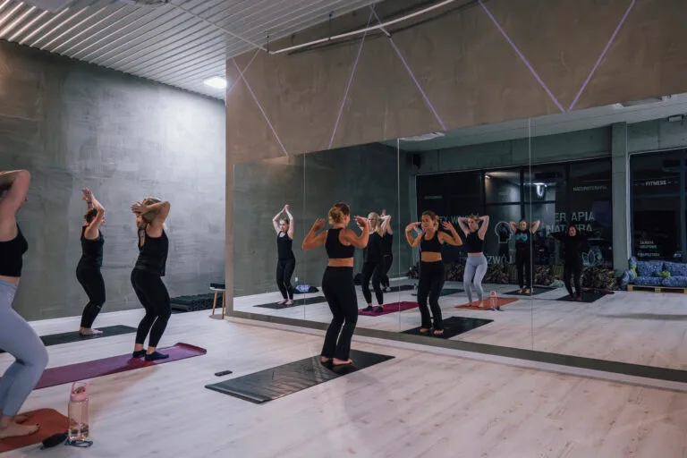

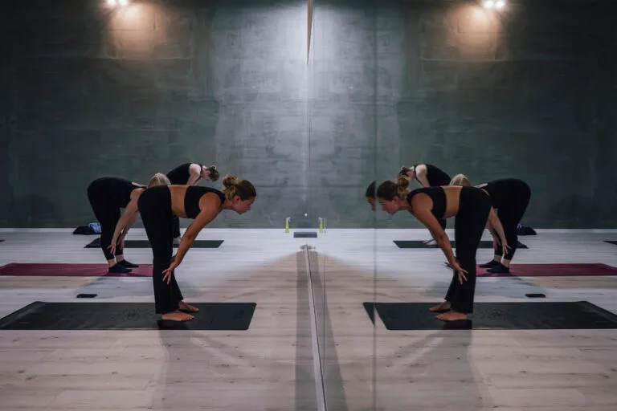
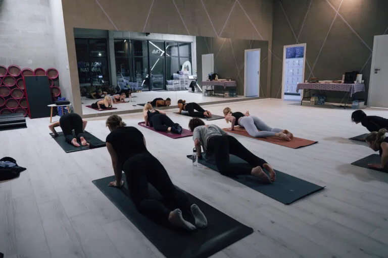
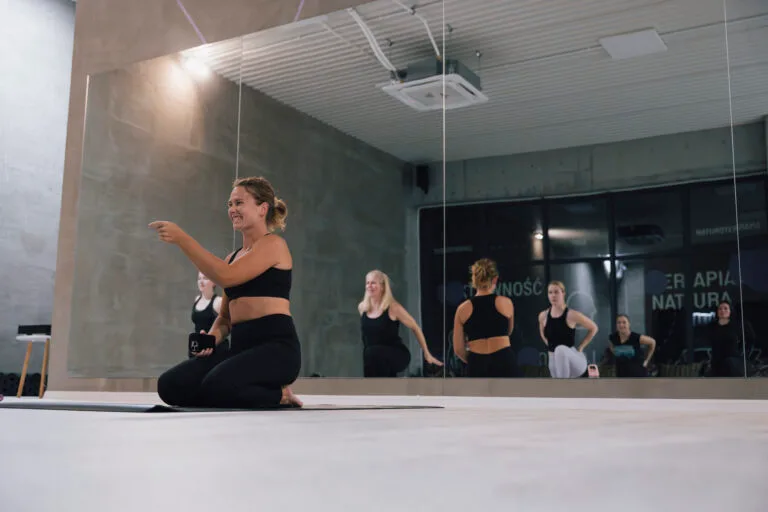
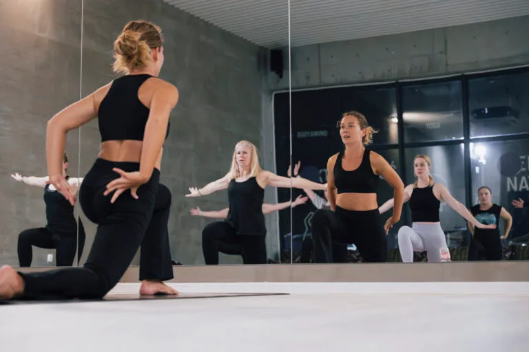
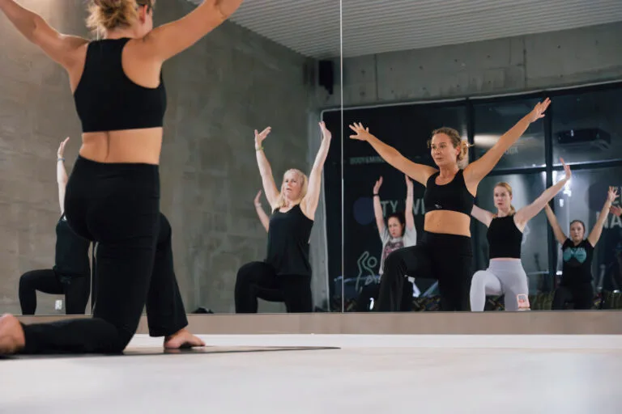
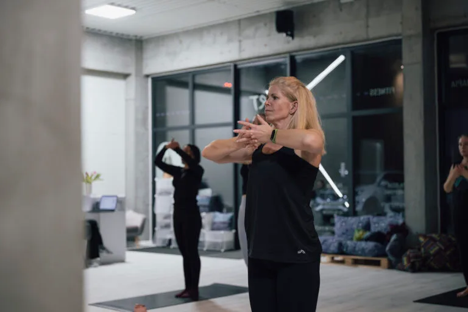
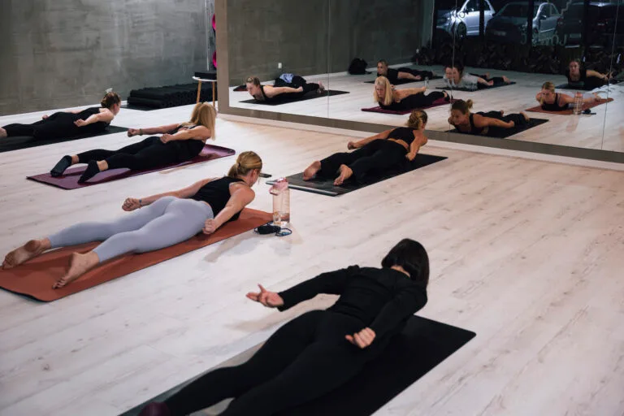
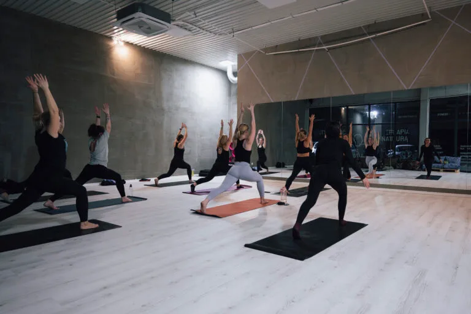
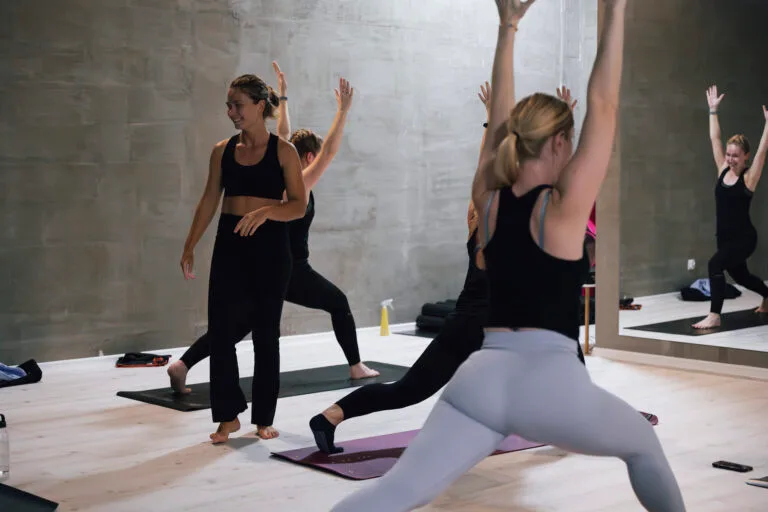
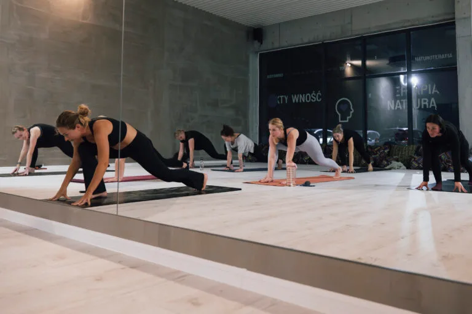
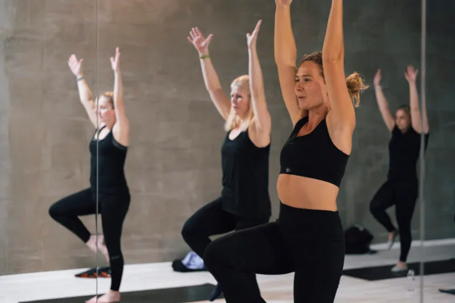
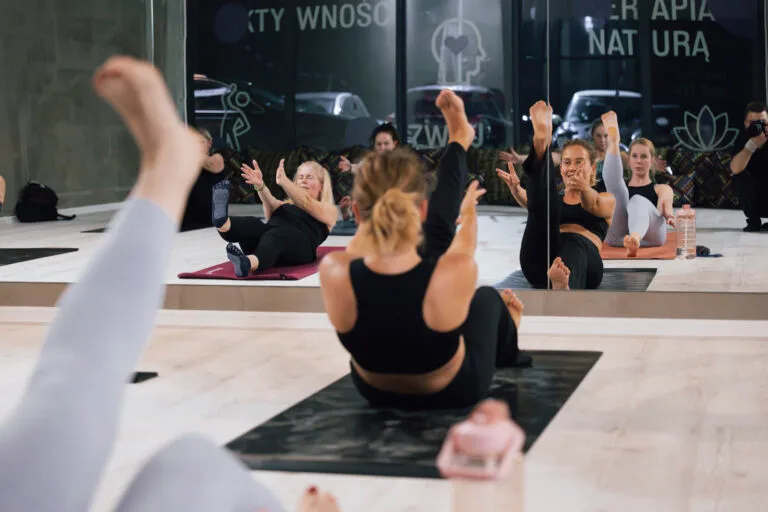
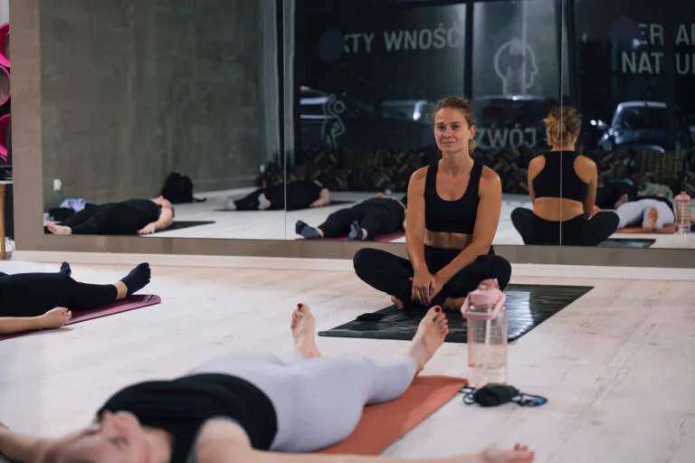
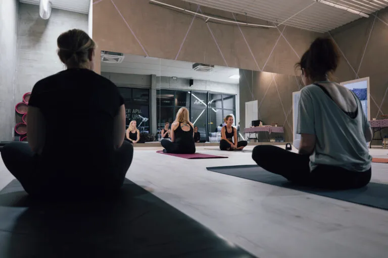
Zapisz się na zajęcia
Wybierz aktywność, która odpowiada Twoim potrzebom i celom!
Zobacz nasz grafik i znajdź zajęcia, które wpisują się w Twój plan dnia. Niezależnie od tego, czy wolisz intensywny trening, relaksujące zajęcia Body & Mind, czy energetyczne lekcje tańca – znajdziesz tu coś dla siebie. Rozpocznij swoją przygodę z ruchem już teraz!